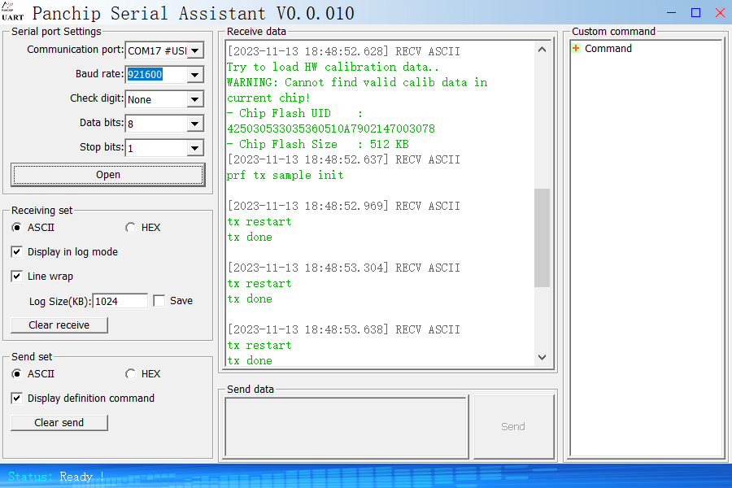
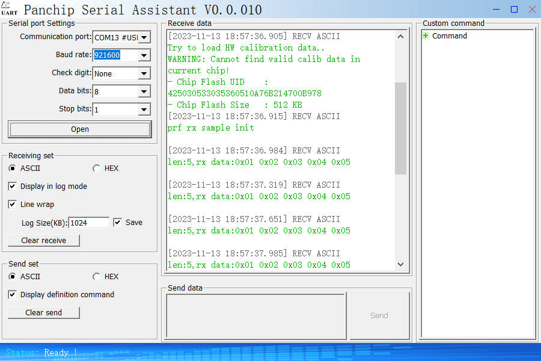
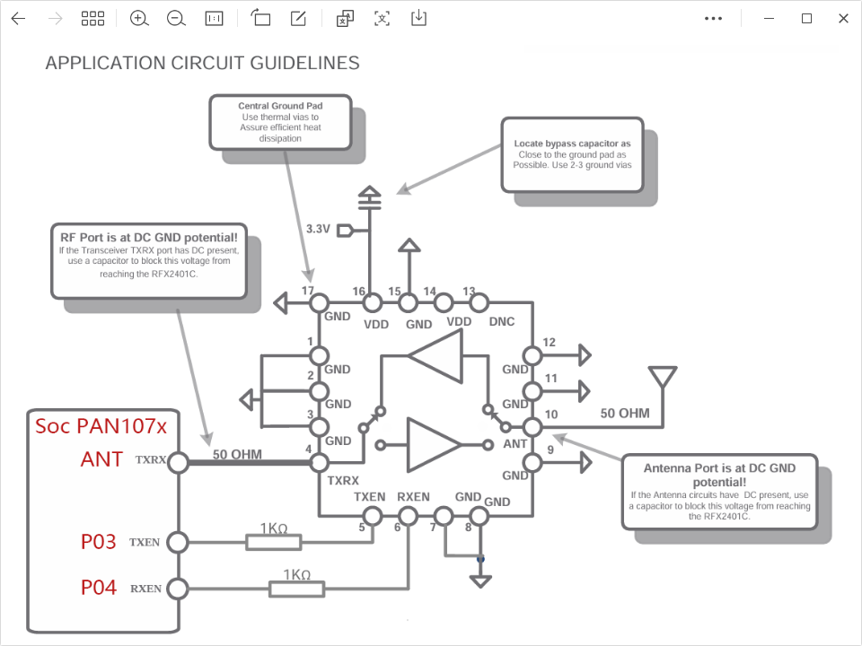
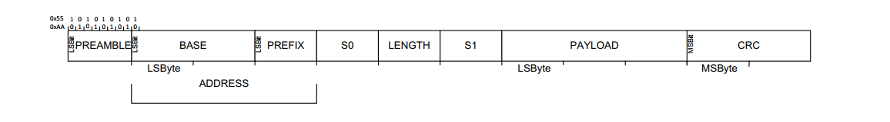
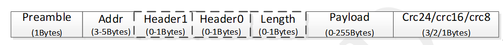
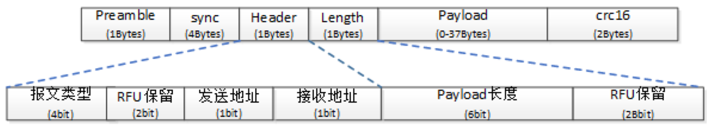

NDK PRF 2.4G 开发指南¶
1 概述¶
本文介绍的内容有以下几点：
TRX例程功能：
发射端例程的功能：每隔333ms发送一次2.4G数据包，长度5个字节。
发射端例程的功能：接收发送端的2.4G信号，并将接收到的数据通过串口打印出来。
开发说明：
2.4g初始化配置
API介绍
SAMPLE运行流程
帧结构介绍
2 环境配置¶
环境要求
board：pan1070_evb
uart：显示串口输出log，uart端口P16（UART_RX）、P17（UART_TX）
PC串口工具：Panchip Serial Assistant V0.0.010.exe
“PRF_TX_SAMPLE”的板子需要搭配和”PRF_RX_SAMPLE”的板子一起使用，两个例程的CONFIG要选择一样。
编译和烧录：
项目位置：
TX端：”03_MCU\mcu_samples\PRF_TX_SAMPLE”。
RX端：”03_MCU\mcu_samples\PRF_RX_SAMPLE”。
TX端和RX端选择project target，如下图所示：
工程有四种project target，分别对应如下四种不同的配置：
B_250k，250k私有调制方式
NRF52 250k，可以和nrf52832 250k通信，GFSK调制方式
XN297 1M，可以和xn297 1M phy通信
NRF 2M，可以和nrf24l01 2M phy 通信
不同的配置也是可以修改的，分别在不同target的”sample_config”文件中，用户可以根据自己的需求修改相应的配置。
选择好后编译程序，用j-link烧录编译后的hex文件到pan1070_evb板子中。
3 演示说明¶
步骤
将接收端串口和发射端串口分别接到PC的USB端口上。
配置接收端和发送端。
观察PC串口工具的输出结果。
结果
发射端输出结果：

接收端输出结果：

4 开发说明¶
4.1 2.4G初始化配置¶
配置的结构体“pan_prf_config_t”，各成员介绍如下：
Type |
name |
Description |
|---|---|---|
prf_mode_t |
work_mode |
工作模式配置，包括普通型、增强型、自定义增强型 |
prf_chip_mode_sel_t |
chip_mode |
xn297通信协议和nordic通信协议配置 |
prf_trx_mode_t |
trx_mode |
收发模式配置 |
prf_phy_t |
phy |
通信速率配置，可配置为1M、2M、CODED_S8、CODED_S2、250K |
prf_crc_sel_t |
crc |
数据包CRC配置，可配置为crc 16bit，crc 8bit，crc 24bit ，no crc |
prf_scramble_sel_t |
scr |
数据包扰码的配置，可配置为使用扰码和不使用扰码 |
prf_mode_conf_sel_t |
mode_conf |
2.4g不同模式射频参数配置，设置deviation |
uint16_t |
rx_timeout |
接收超时时间配置，最大50000us |
uint16_t |
rf_channel |
2.4g频点配置，任意频点可设(2402Mhz~2480Mhz)，也可配置带外频点，时间较长 |
uint8_t |
tx_no_ack |
配置增强型模式下tx是否需要ack |
prf_trf_t |
trf_type |
特殊通信模式设置，normal模式、nrf52模式和b250k模式 |
uint8_t |
rx_length |
rx接收数据包长度配置，增强型模式配置不生效 |
uint8_t |
sync_length |
接入地址长度配置，可配置为3、4、5字节 |
uint8_t |
addr[5] |
接入地址的内容(xn297模式下可白化地址，防止出现长0和长1的地址) |
uint8_t |
crc_include_sync |
crc作用域是否包含接入地址（XN297和NRF24L01必须使能），NRF52可配 |
uint8_t |
src_include_sync |
扰码作用域是否包含接入地址，XN297包含，NRF不包含 |
prf_pipe_t |
pipe |
设置不同地址通信通道（0~7） |
int8_t |
tx_power |
设置发射功率，范围(-45dbm~9dbm) |
uint8_t |
pid_manual_flag |
pid手动配置的标志，使能后可以手动设置pid（0~3） |
prf_mode_t：
Type |
Value |
Description |
|---|---|---|
PRF_MODE_NORMAL |
0 |
普通型 |
PRF_MODE_ENHANCE |
1 |
增强型 |
PRF_MODE_NORMAL_M1 |
2 |
自定义增强型 |
prf_chip_mode_sel_t：
Type |
Value |
Description |
|---|---|---|
PRF_CHIP_MODE_SEL_BLE |
1 |
蓝牙模式（BLE和2.4g模式切换） |
PRF_CHIP_MODE_SEL_XN297 |
2 |
XN297模式 |
PRF_CHIP_MODE_SEL_NORDIC |
3 |
NORCDIC模式 |
prf_trx_mode_t：
Type |
Value |
Description |
|---|---|---|
PRF_TX_MODE |
0 |
2.4G发射 |
PRF_RX_MODE |
1 |
2.4G接收 |
prf_phy_t：
Type |
Value |
Description |
|---|---|---|
PRF_PHY_1M |
1 |
1M通信速率 |
PRF_PHY_2M |
2 |
2M通信速率 |
PRF_PHY_CODED_S8 |
3 |
S8编码PHY |
PRF_PHY_CODED_S8 |
4 |
S2编码PHY |
PRF_PHY_250K |
5 |
250k通信速率 |
prf_crc_sel_t：
Type |
Value |
Description |
|---|---|---|
PRF_CRC_SEL_NOCRC |
0 |
no crc |
PRF_CRC_SEL_CRC8 |
1 |
crc 8bit |
PRF_CRC_SEL_CRC16 |
2 |
crc 16bit |
PRF_CRC_SEL_CRC24 |
3 |
crc 24bit |
prf_scramble_sel_t：
Type |
Value |
Description |
|---|---|---|
PRF_SRC_SEL_NOSRC |
0 |
不使能扰码 |
PRF_SRC_SEL_EN |
1 |
使能扰码 |
prf_mode_conf_sel_t：
Type |
Value |
Description |
|---|---|---|
PRF_DEV_NRF |
1 |
NRF模式deviation配置，1M 170k，2M 320K |
PRF_DEV_BLE |
2 |
NRF模式deviation配置，1M 250k，2M 500K |
PRF_G_250K_CONF |
3 |
GFSK调制250K通信速率射频参数配置 |
PRF_B_250K_CONF |
4 |
私有调制250K通信速率射频参数配置（B_250K） |
prf_addr_length_sel_t：
Type |
Value |
Description |
|---|---|---|
PRF_ADDR_LENGTH_SEL_2 |
2 |
2 BYTE地址长度 |
PRF_ADDR_LENGTH_SEL_3 |
3 |
3 BYTE地址长度 |
PRF_ADDR_LENGTH_SEL_4 |
4 |
4 BYTE地址长度 |
PRF_ADDR_LENGTH_SEL_5 |
5 |
5 BYTE地址长度 |
prf_pipe_t：
Type |
Value |
Description |
|---|---|---|
PRF_PIPE0 |
1<<0 |
管道0 |
PRF_PIPE1 |
1<<1 |
管道1 |
PRF_PIPE2 |
1<<2 |
管道2 |
PRF_PIPE3 |
1<<3 |
管道3 |
PRF_PIPE4 |
1<<4 |
管道4 |
PRF_PIPE5 |
1<<5 |
管道5 |
PRF_PIPE6 |
1<<6 |
管道6 |
PRF_PIPE7 |
1<<7 |
管道7 |
prf_trf_t：
Type |
Value |
Description |
|---|---|---|
PRF_TRF_NORMAL |
0 |
普通模式传输 |
PRF_TRF_NRF52 |
1 |
NRF长包模式（payload最大255byte）传输 |
PRF_TRF_B_250K |
2 |
B_250K通信速率模式传输 |
prf_endian_t：
Type |
Value |
Description |
|---|---|---|
PRF_BIG_ENDIAN |
0 |
大端模式传输 |
PRF_LITTLE_ENDIAN |
1 |
小端模式传输 |
4.2 API介绍¶
panchip_prf_set_data¶
void panchip_prf_set_data(panchip_prf_payload_t *p_payload);
TX模式下设置payload的内容和长度。
panchip_prf_set_ack_data¶
void panchip_prf_set_ack_data(panchip_prf_payload_t *p_payload);
RX模式下设置ack payload的内容和长度，ack without payload需要将data length设为0。
panchip_prf_data_rec¶
uint8_t panchip_prf_data_rec(panchip_prf_payload_t *p_payload);
RX模式下获取接收的数据和长度，返回值是数据长度。必须在RX中断中读取数据，在其他地方读数据会异常。
panchip_prf_set_chn¶
void panchip_prf_set_chn(pan_prf_config_t *p_config);
设置通信的频点，带内2400~2480任意频点可设，也可设置带外频点，带外频点配置的时间比带内要长。频点必须在TX和RX退出后使用。
panchip_prf_mode_conf_set¶
void panchip_prf_mode_conf_set(prf_mode_conf_sel_t conf);
设置deviation，不同模式下射频dev参数配置，可以选择BLE模式、NRF模式、GFSK 250K、私有调制250K。
panchip_prf_set_phy¶
void panchip_prf_set_phy(pan_prf_config_t *p_config);
设置通信速率，可以选择1M、2M、PRF_PHY_CODED_S8、PRF_PHY_CODED_S2、PRF_PHY_250K。
panchip_prf_set_trx_mode¶
void panchip_prf_set_trx_mode(prf_trx_mode_t trx_mode);
设置接收模式和发射模式，在idle状态下调用。
panchip_prf_set_work_mode¶
void panchip_prf_set_work_mode(prf_mode_t work_mode);
设置普通型工作模式和增强型工作模式，在idle状态下调用。
panchip_prf_set_addr¶
void panchip_prf_set_addr(uint8_t *addr, uint8_t len, prf_pipe_t pipe, uint8_t trx_addr);
设置通信地址内容、长度、地址通道、地址类型。
地址类型分为以下三种：
trx_addr |
Value |
Description |
|---|---|---|
PRI_RF_MODE_SEL_TX |
0 |
设置TX地址 |
PRI_RF_MODE_SEL_RX |
1 |
设置RX地址 |
PRI_RF_MODE_SEL_TRX |
2 |
设置TRX地址，TX和RX地址相同 |
TX地址只有一个PIPE，RX地址有8个PIPE。
NOTE：地址的最后一个字节不能出现连续的6个bit为0或者为1。
panchip_prf_set_tx_noack¶
void panchip_prf_set_tx_noack(bool flag);
设置TX增强型模式下是否需要接收ACK，设置成true后，TX后不会进接收。
NOTE：该字段和NRF52系列的noack字段是相反的，PAN1070的true对应NRF52的false，PAN1070的false对应NRF52的true。由于PAN1070该字段是硬件操作的，适配需要修改NRF52的软件。
PAN1070和NRF2401、XN297通信无此问题。
panchip_prf_carrier_start¶
void panchip_prf_carrier_start(uint16_t tx_channel);
发射单载波，参数设置任意频点。必须在TX和RX退出后使用。
panchip_prf_read_rssi¶
int16_t panchip_prf_read_rssi(void);
收到数据后，在接收中断中获取数据强度的RSSI值。这个RSSI会缓存，收到新的数据后值会覆盖。获取RSSI值也可直接使用变量prf_rssi，和接口读出来的值是一样的。
panchip_prf_enable_carrier_rssi¶
void panchip_prf_enable_carrier_rssi(void);
使能获取载波强度的RSSI模式，调用后不能接收数据。
panchip_prf_read_carrier_rssi¶
int16_t panchip_prf_read_carrier_rssi(void);
获取载波强度的RSSI值，这个RSSI值是实时的，不会缓存。
panchip_prf_disable_carrier_rssi¶
void panchip_prf_disable_carrier_rssi(void);
载波强度RSSI获取后，关闭RSSI功能。关闭后可以正常接收数据。
panchip_prf_rx_length_irq_cfg¶
void panchip_prf_rx_length_irq_cfg(uint8_t value);
配置是否使能rx length err中断，当rx收到数据硬件解析出来的length值大于配置的rx length（结构体中“rx_length”字段），rx length err irq会产生，普通型和增强型接收都有效。在使用前需要先注册中断函数。
panchip_prf_set_crc¶
void panchip_prf_set_crc (pcrc_sel_t crc, uint8_t crc_include_sync);
设置crc的类型和crc的范围是否包含地址。
panchip_prf_set_whitening¶
void panchip_prf_set_whitening (prf_scramble_sel_t src, uint8_t src_include_sync);
设置白化类型和白化范围是否包含地址。
panchip_prf_pa_mode¶
void panchip_prf_pa_mode (void);
功能：设置prf支持带PA拓展模式，可以外接PA芯片，增大发射功率。
使用说明：
在panchip_prf_init()接口后面，panchip_prf_trx()接口之前调用即可。
RX_EN对应GPIO P04，TX_EN对应GPIO P03，端口不可修改。
硬件连线参考下图：

PA连接示意图
### 4.3 MULTI PIPE使用介绍
1. 多**pipe**的使用主要在于接收端，发送端同时只有一个**pipe**，接收端同时有**8**个地址。
2. 涉及到两个接口，**panchip_prf_set_addr**和**panchip_prf_get_pipe**。**panchip_prf_set_addr**为每个**pipe**设置不同的地址，接收端收到数据后可以使用**panchip_prf_get_pipe**获取当前收到数据对应的**pipe**地址。
3. 详细使用情况请参考例程” **PRF_RX_MULTI_PIPE**”和” **PRF_TX_MULTI_PIPE**”。**RX**端将收到的数据打印出来，同时打印当前的**pipe**通道号，**TX**端每**1s**切换不同**pipe**通道，同时每个**pipe**通道配置相应的地址。**注意：接收端在增强型模式下收到数据后需要配置TX地址，地址为当前pipe通道的地址。**
### 4.4 中断介绍
中断介绍如如下代码所示：
```c
void event_tx_fun(void)
{
printk("tx done\n");
} //增强型和普通型模式TX结束后会产生TX中断，TX退出，增强型TX完了之后会马上进入RX。
void event_rx_fun(void)
{
panchip_prf_payload_t rx_payload;
rx_payload.data_length = panchip_prf_data_rec(&rx_payload);
printk("rx data:");
data_printk(rx_payload.data, rx_payload.data_length);
} //增强型和普通型模式RX收到数据后会进入RX中断,RX退出，增强型RX完了之后会马上进入TX。
void event_rx_timeout_fun(void)
{
printk("rx timeout\n");
} //接收超时后会进入timeout中断,RX退出
void event_crc_err_fun(void)
{
printk("crc err\n");
} //接收数据错误会进入crc中断，RX退出，不会进入TX
/*普通型TX，TX结束退出后产生TX中断，进入下一次TX后须调用"panchip_prf_trx_start"。*/
/*普通型RX，收到数据后会进入RX中断，接收超时会进入timeout中断，收到错误数据会进入crc中断，进入下一次RX后须调用"panchip_prf_trx_start"。*/
/*增强型TX，TX结束后硬件会自动进入RX，RX收到数据后会进入RX中断，接收超时会进入timeout中断，收到错误数据会进入crc中断，进入下一次TX后须调用"panchip_prf_trx_start"。*/
/*增强型RX，RX收到数据后会硬件会自动进入TX，TX结束退出后产生TX中断，接收超时会进入timeout中断，收到错误数据会进入crc中断，进入下一次RX后须调用"panchip_prf_trx_start"。*/
```
**注意：在高性能的2.4g应用中尽量不要使用打印，会影响射频收发性能。增强型RX中断中不能有延时或者打印或者执行时间很长的接口，不然会影响TX中断从而导致时序错误。**
## 5 Sample运行流程
### prf_sample_rx例程运行流程
如下图所示：
:::{figure-md}
:align: center

RX例程流程图
6 2.4G帧结构介绍¶
兼容三种帧结构：xn297、nrf24l01、nrf52
6.1 xn297兼容帧结构¶
普通型：
3 byte |
3~5 byte |
1~64 byte |
0/1/2/3 byte |
|---|---|---|---|
preamble(0x710f55) |
addr |
payload |
crc(包含addr和payload) |
空中bit序：大端模式
增强型：在地址和payload之间插入signal(10bit)数据。
3 byte |
3~5 byte |
10bit |
1~64 byte |
0/1/2/3 byte |
|---|---|---|---|---|
preamble(0x710f55) |
addr |
signal |
payload |
crc(包含addr和payload) |
signal结构：
7bit |
2bit |
1bit |
|---|---|---|
数据长度标识(动态payload) |
PID标识 (判断是否是重发包) |
NO_ACK标识 (tx完是否需要ack) |
数据长度7bit最大包长发送可支持127byte，接收最大包长可支持128byte。
白化和crc的作用域包括addr+payload+signal。
6.2 nrf2401兼容帧结构¶
普通型：
空中bit序：大端模式
1 byte |
3~5 byte |
1~32byte |
0/1/2/3 byte |
|---|---|---|---|
preamble(0x55或者0xaa) |
addr |
payload |
crc(包含addr和payload) |
preamble：地址第一个bit为0，取0xaa；地址第一个bit为1，取0x55。
增强型：在地址和payload之间插入signal(9bit)数据。
1 byte |
3~5 byte |
9bit |
1~32byte |
0/1/2/3 byte |
|---|---|---|---|---|
preamble(0x55或者0xaa) |
addr |
signal |
payload |
crc(包含addr和payload) |
signal结构：
6bit |
2bit |
1bit |
|---|---|---|
数据长度标识(动态payload) |
PID标识 (判断是否是重发包) |
NO_ACK标识 (tx完是否需要ack) |
数据长度6bit最大包长发送可支持63byte，接收最大包长可支持64byte。
nrf2401无白化，crc的作用域包括addr+payload+signal。
6.3 nrf52兼容帧结构¶
nrf52帧结构如下图所示：

nrf52帧结构¶
当s0=0，length=0，s1=0时，和nrf2401普通型帧结构一样。
当s0=0，length=6，s1=3时，和nrf2401增强型帧结构一样。payload长度最大32byte。
当s0=0，length=8，s1=3时，长包模式。payload长度最大255byte。
空中bit序：大小端模式可配
crc作用域：addr(可配)+s0+length+s1+payload
长包模式下，PAN1070 signal结构如下：
8bit |
2bit |
1bit |
|---|---|---|
数据长度标识(动态payload) |
PID标识 (判断是否是重发包) |
NO_ACK标识 (tx完是否需要ack) |
6.4 自定义帧结构¶
chip_mode字段为“PRF_CHIP_MODE_SEL_NORDIC”模式时，帧结构如下：

header0、header1、length为可选字段，可以适配BLE和NRF52不同模式的帧结构，例如BLE广播帧结构：

蓝牙广播中的报头和长度对应PRF_MODE_NORMAL_M1模式中的header0和length，header1没有。
6.5 B250K帧结构¶
使用nrf普通型帧结构进行兼容。 B250K中payload长度为8bit，而且最大payload(包含addr在内)长度为255.另外，length字段固定为1个字节。
Preamble长度有：2/3/4/6/8/12/16/24byte， 帧速率为250K。